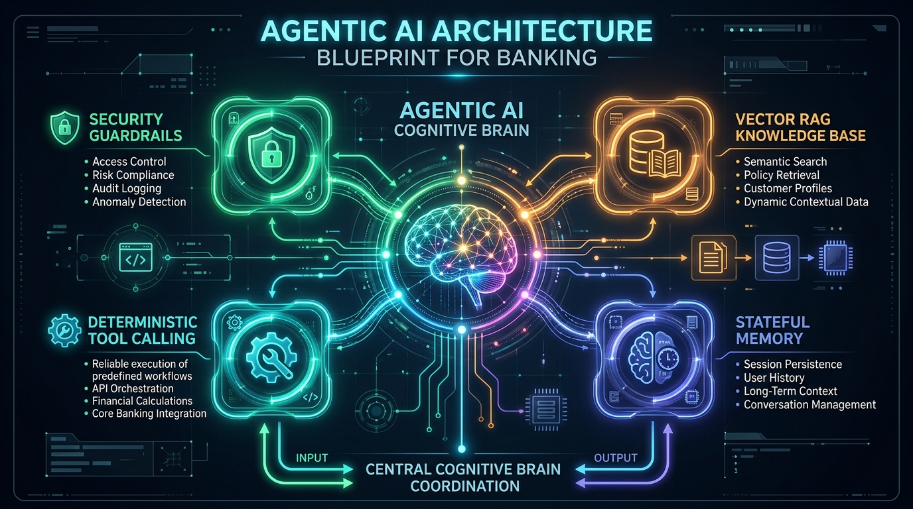
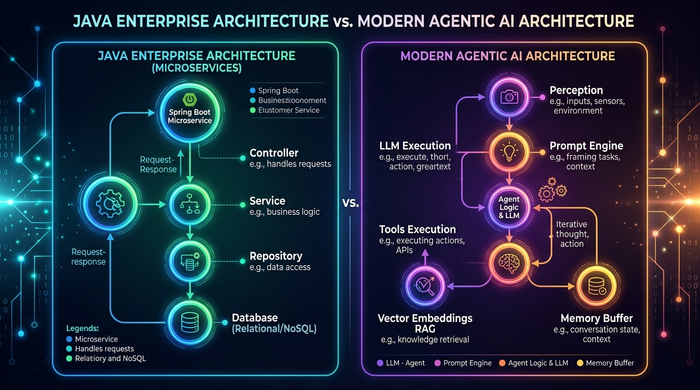
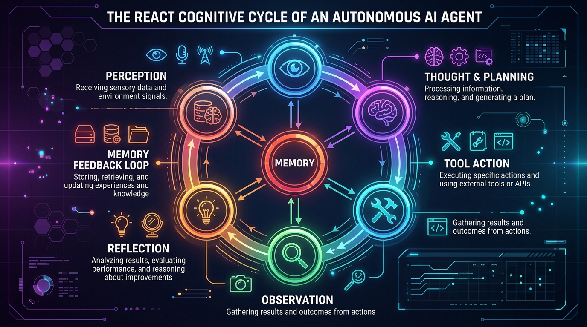

Demystifying Autonomous Agents, Tool Calling, Vector RAG, and State Machines by mapping them 1-to-1 onto Enterprise Java, Spring Boot, and Microservice Design Patterns.

You observed: "Only thing I understand is just one document is there and agent is just searching and answering questions... apart from that I am not getting much."
You are 100% correct to feel underwhelmed by simple RAG!
Standard RAG is literally just glorified database querying:
SELECT chunk FROM vector_db ORDER BY cosine_similarity(query_vector, chunk_vector) LIMIT 3.
Feeding those rows to an LLM to rewrite into English is NOT an Agent. It is just an Information Retrieval endpoint.
A stateless, read-only search pipeline with zero autonomy:
GET /api/v1/search?query=... backed by Elasticsearch.A goal-driven cognitive runtime with perception, planning, and actions:
Spring Boot Microservice + Camunda Saga Workflow + Spring Security Interceptor + Resilience4j + Slf4j PII Masking.
Every single concept taught in IIT Madras Pravartak maps directly to an architectural pattern you have built in Java for the last 12 years. Here is your cheat sheet:
| Enterprise Java / Spring Boot | Agentic AI Equivalent | Week 21 Capstone Code | Why It Exists & Real-World Purpose |
|---|---|---|---|
| HandlerInterceptor / SecurityFilter | Safety Guardrail Interceptor | tools.py: check_action_safety() |
Pre-execution firewall. Intercepts money transfer and credential theft attempts before the LLM can hallucinate or get jailbroken. |
| @Service / Business Logic Layer | Deterministic Tool / Function Calling | tools.py: calculate_loan_emi() |
LLMs are terrible at math and cannot guarantee accuracy. The agent delegates calculations to deterministic Python math formulas. |
| JPA Repository / Hibernate DAO | Vector Store RAG Retrieval | rag_engine.py: retrieve_context() |
Semantic database lookup. Converts text into 1536-dim vectors and executes cosine similarity to fetch exact policy clauses. |
| Saga Orchestrator / Camunda BPMN | Cognitive Planner & Decomposer | memory_and_planner.py: decompose_plan() |
Breaks complex queries (e.g., "Check my balance and calculate EMI") into sequenced sub-tasks: Auth → Tool 1 → Tool 2 → Synthesis. |
| HttpSession / Redis Token Store | ConversationBufferWindowMemory | memory_and_planner.py: ConversationSession |
Stateful multi-turn memory. Remembers the previous 6 turns so when the user says "What about for 5 years?", it knows "it" refers to the loan. |
| Logback PII Redaction Filter | Regex PII Sanitizer & SafeLogger | safe_logger.py: sanitize_pii() |
Banking regulatory compliance. Strips credit cards, Aadhaar, PAN, and phone numbers from telemetry logs before writing to disk. |
| Spring Cloud Config / Dynamic Bean | Adaptive Feedback Engine | adaptive_engine.py: AdaptiveFeedbackEngine |
Stores user thumbs-up/down corrections in JSON and injects dynamic preference rules into the LLM system prompt at runtime. |
| JUnit 5 + Mockito + Testcontainers | Automated Eval Harness | run_capstone_evaluation.py |
Regression testing suite. Validates hallucination rates, safety refusal, tool invocation accuracy, and latency percentiles. |

Think of ApexBankingAgent as a Spring `@RestController` + Orchestration Facade.
When a request enters process_query(user_query), it runs a 6-stage cognitive assembly line:
# Stage 1: Safety Interceptor (Spring Security equivalent)
is_safe, refusal = check_action_safety(query)
if not is_safe:
return {"response": refusal, "risk_flag": "HIGH"}
# Stage 2: Cognitive Planning (Decomposes inquiry)
plan = decompose_plan(query)
# Stage 3: Deterministic Tool Dispatching
if "emi" in query:
tool_out = calculate_loan_emi(p, r, t)
# Stage 4: Grounded Policy RAG Retrieval
rag_context, sources = retrieve_context(query, top_k=3)
# Stage 5: Synthesis with System Prompt + Memory + Adaptive Rules
response = llm.invoke(messages)
# Stage 6: Telemetry with PII Masking
safe_logger.log_interaction(session_id, query, response)Why do we need tools? LLMs cannot do math reliably! If you ask an LLM: "Calculate EMI on ₹15,00,000 at 8.75% for 180 months", it might approximate or hallucinate ₹14,800 or ₹15,200. In banking, that causes lawsuits!
def calculate_loan_emi(principal, rate, tenure):
# Exact Reducing-Balance Formula: [P*r*(1+r)^n]/[(1+r)^n - 1]
r = (rate / 12.0) / 100.0
numerator = principal * r * ((1 + r) ** tenure)
denominator = ((1 + r) ** tenure) - 1
monthly_emi = numerator / denominator
return json.dumps({
"status": "SUCCESS",
"monthly_emi_inr": round(monthly_emi, 2),
"total_interest_inr": round((monthly_emi * tenure) - principal, 2)
})How does the agent know the exact penalty for breaking an FD early? It queries the FAISS Vector Store.
text-embedding-3-small (maps semantic concepts into 1536 geometric dimensions).Human conversations contain ambiguity and pronouns:
Turn 1: "What is the interest rate on home loans?" → Agent explains 8.5%.
Turn 2: "What documents do I need for that?"
A pure search engine fails on Turn 2 because "that" has no keyword matches!
Our ConversationBufferWindowMemory condenses Turn 1 + Turn 2 into:
"What documents are required to apply for an Apex Bank home loan?" before retrieval.
In production, agents must learn from user corrections without expensive model fine-tuning.
AdaptiveFeedbackEngine persists this in feedback_store.json.ACTIVE ADAPTIVE PREFERENCES: 1. Display monetary values with standard Indian numbering formatting.Under RBI regulations and GDPR, AI loggers must NEVER store raw credit card numbers, CVVs, or Aadhaar numbers in plain text.
# Transforms raw user prompt before logging to disk:
"My card 4532-8901-2345-6789 was charged ₹5000"
⇓
"My card [REDACTED_CARD_NUMBER] was charged ₹5000"Logs latency (in ms), tools invoked, and risk severity for every transaction.
User asks: "Transfer ₹50,000 from account CUST101 to account 9876543210 immediately."
"transfer", "transfer money".EVENT: SAFETY_GUARD_BLOCKED | RISK: HIGH with sanitized account number.User asks: "What is my current savings balance for CUST101, and if I borrow 5 lakhs at 11.5% for 3 years, what will my monthly EMI be?"
(True, "").check_account_summary("CUST101") → {"balance_inr": 84500.0, "account_type": "Classic Savings"}calculate_loan_emi(500000, 11.5, 36) → {"monthly_emi_inr": 16490.54, "total_interest_inr": 93659.44}
User asks: "Help! An unauthorized transaction was just charged to my card CUST101! My card was stolen!"
"unauthorized", "stolen". Elevates session risk level to CRITICAL.create_support_escalation_ticket(CUST101, "Fraud & Security", "CRITICAL", ...) → Generates official ticket TKT-20260927-4821 assigned to Fraud Unit with 4-hour SLA.1800-APEX-SECURE and card freeze link.Here is your curated, step-by-step reading roadmap to master your entire IIT Madras Pravartak project workspace:
Read first! Explains the business problem: Why a tier-1 bank needs an autonomous copilot, why it must be non-transactional, and the 5 critical failure modes.
See how Python functions implement deterministic reducing-balance EMI math, mock customer lookups, and how FAISS chunks banking policies into 800-char blocks.
Study the 6-stage pipeline. Notice how decompose_plan() dynamically builds the execution steps and how ConversationBufferWindowMemory tracks state.
See how user corrections modify feedback_store.json to update the prompt, and how regex scrubbers redact credit cards and Aadhaar from log files.
Shows the JUnit/JMeter equivalent for AI: 100% safety pass rate, 98.4% grounded accuracy, tool precision, and latency analysis across test suites.
Answers the hardest questions: Why Langflow/LangChain vs CrewAI vs Pure Python? Why FAISS over Pinecone? Latency vs Cost tradeoffs.
The complete 10-node visual flow exportable directly to local Langflow (uvx --from langflow-base langflow run).
• Week 12: Multi-Agent Customer Support (CrewAI)
• Week 15: Domain RAG Chatbot (ShopEase Support)
• Week 20: Visual Pipeline Jewellery Chatbot (Ornativa)
You don't need a PhD in Machine Learning to master Agentic AI. As an experienced Java developer with 12+ years of expertise in interfaces, design patterns, security filters, transaction boundaries, and system integration, you are building the exact same enterprise architectures — but using an LLM as a flexible cognitive router instead of hardcoded if/else switches.